Геоинформационная WEB-платформа предназначенна для целей 3D-визуализации разнородных геоинформационных данных, проведения расчетов по ним с использованием инструментария платформы и наглядной демонстрации полученных результатов.
Основные возможности:
- Клиент-серверная архитектура
- Использование WMTS-серверов для получения и отображения растровых слоев
- Отображение 3D-моделей и векторных слоев в 3D-режиме
- Работа как в гостевом режиме, так и в личном кабинете пользователя
- Организация данных по проектам
- Базовый расчетный функционал
- Работа под ОС AstraLinux 1.6, 1.7
Функционал комплекса:
Основными элементами комплекса выступают модули просмотра проектов и продукции, работы со слоями, выбора системы координат, панели инструментов, а также поиска спутниковых снимков и их нанесение на глобус.
Для того, чтобы начать работу с инструментом "Линейные измерения", необходимо выбрать соответствующий инструмент в панели инструментов, расположенной справа. Далее необходимо отметить начальную точку для измерений на карте при помощи клика левой кнопкой мыши на нужном участке. Затем установить конечную точку кликом правой клавишей мыши.
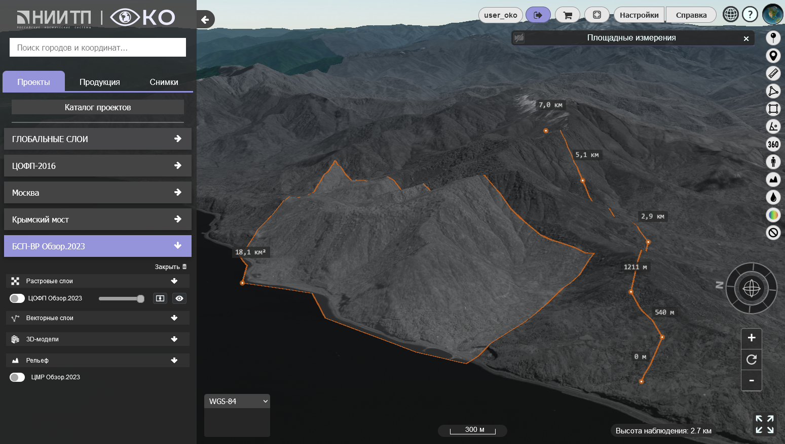
Измеренное расстояние появится на экране рядом с линией.
Для того, чтобы начать работу с инструментом "Площадные измерения", необходимо выбрать
соответствующий инструмент в панели инструментов, расположенной справа. Далее необходимо
отметить начальную точку для измерений на карте при помощи клика левой кнопкой мыши на
нужном участке. Затем аналогичным образом установить последующие точки и завершить
установку точек кликом правой клавишей мыши.
Начало работы с инструментом "Добавить точку" состоит в выборе соответствующего инструмента в правом инструментальном меню с последущим кликом левой кнопкой мыши в интересующей точке.
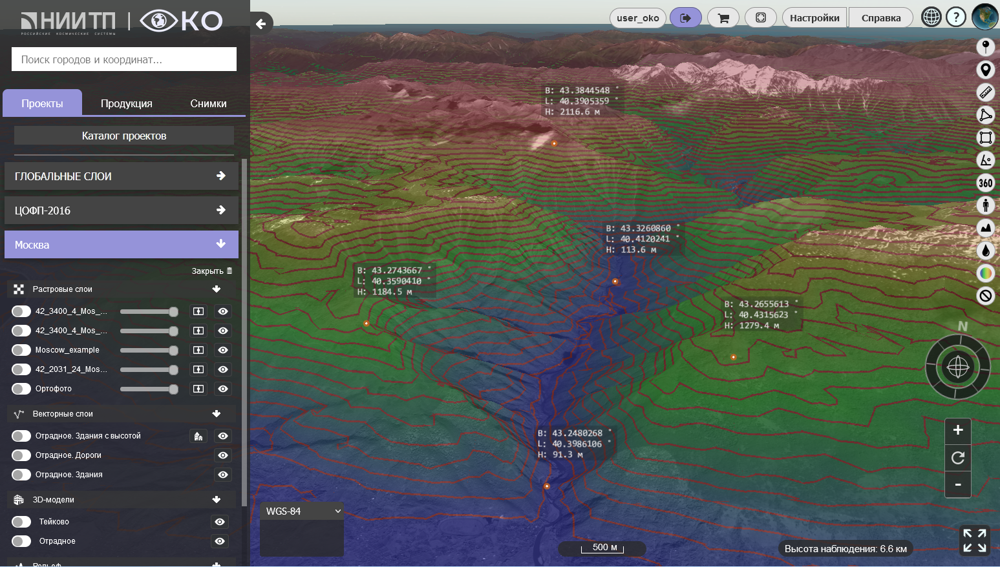
После нанесения точки на глобус, рядом с ней появится информация с координатами и
высотой.
Для получения профиля высот необходимо выбрать инструмент "Профиль высот" и провести линию на рабочей поверхности. В случае успеха внизу экрана появится гистограмма, отображающая профиль высот.
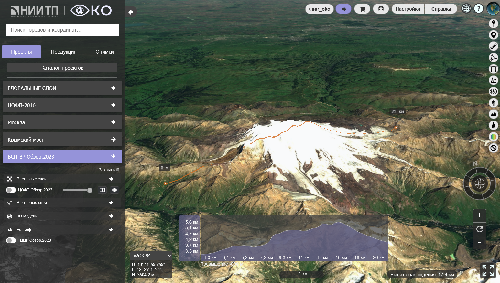
Кроме того, для начала работы с данным инструментом необходимо установить только
начальную точку в рабочей области, конечная точка может варьироваться, таким образом,
профиль высот будет изменяться динамически.
Инструмент "Анализ зон затопления" предназначен для случаев, когда необходимо оценить, какие районы могут оказаться в зоне риска затопления при ЧС различного характера.
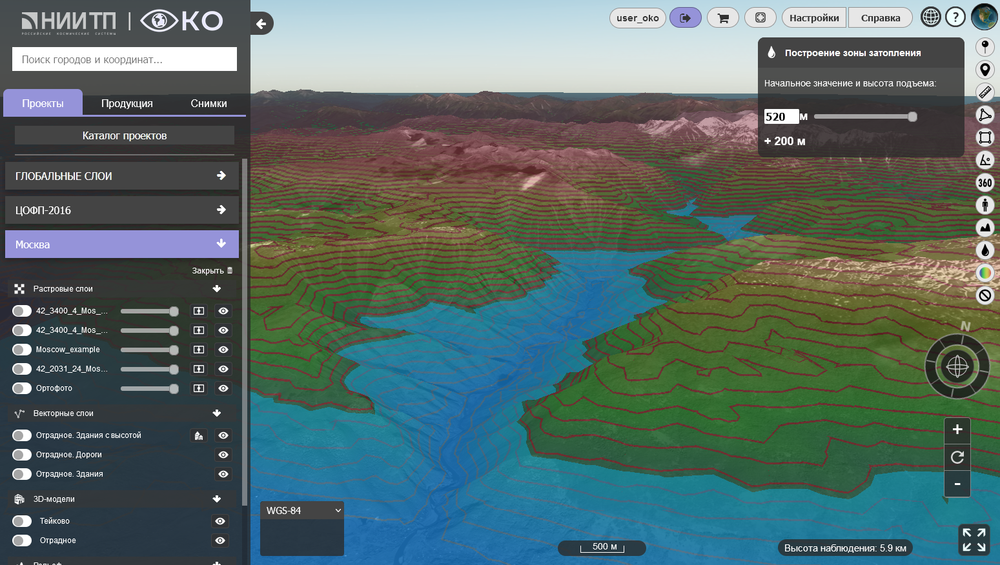
Чтобы провести анализ возможных зон затопления, необходимо выделить интересующий участок
местности, а затем указать начальный уровень воды в окне, которое автоматически
появляется в верхнем правом углу экрана. С помощью слайдера можно производить
регулирование уровня воды в большую сторону от начального уровня.
Инструмент "Дистанция-превышение" предназначен для определения перепада высот на прямом отрезке пути.
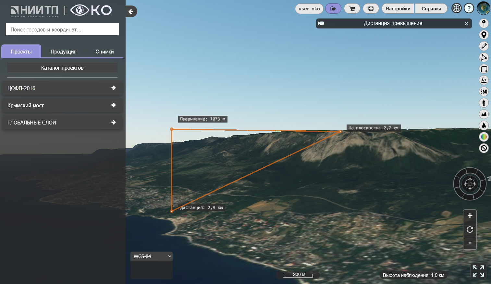С помощью данного инструмента можно просмотреть вид из конкретной точки в определенном направлении. Так, для начала работы с данным инструментом необходимо выбрать точку путем клика левой кнопкой мыши, а затем направить курсор в нужном направлении, кликнув ЛКМ для его фиксирования. Далее произойдет автоматическое изменение перспективы камеры в рабочей зоне.
Инструмент "Круговой облет" предназначен для облета конкретной выбранной точки.
Данный инструмент предназначен для визуализации отмывки рельефа и построения линий уровня. Он позволяет гибко настраивать параметры, такие как дапазон высот для отмывки, интервал, толщину и цвет линий уровней, а также прозрачность слоя.
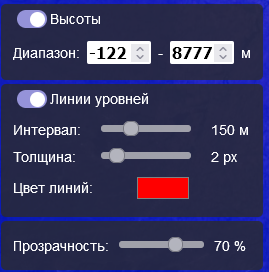Инструмент "Сделать снимок экрана" расположен на верхней панели инструментов.
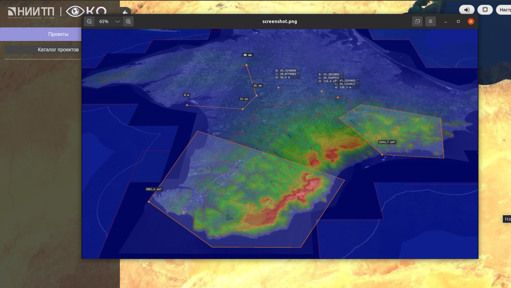
По умолчанию снимок экрана сохраняется в папку "Загрузки" в формате PNG.
Добавление параметров, необходимых для работы функции
Доступ к функции полета БПЛА для пользователя находится справа окна приложения в панели инструментов.
При нажатии на иконку самолета появится модальное окно, а курсор мыши перейдет в режим добавления точек. Нажатием левой кнопки мыши пользователь может добавлять неограниченное количество точек для полета, конечная точка задается нажатием правой кнопки мыши. После добавления последней точки у пользователя на экране появятся векторы на поверхности земли между теми точками, которые он задал. Далее пользователю необходимо задать в модальном окне параметры высоты полета и скорости полета. Высота полета БПЛА отсчитывается от поверхности земли и задается в метрах, скорость задается в км / ч.
Запуск функции
Запуск функции возможно осуществить только после добавления минимум двух точек на карте и ввода параметров высоты полета и скорости полета. После ввода всех данных пользователю необходимо нажать кнопку «Полетели!». После нажатия данной кнопки у пользователя на экране появится дублирующая (зеленая) линия на заданной высоте, которая полностью дублирует заданные на поверхности земли точки. Появится дублирующая (желтая) плавная линия, которая показывает плавный путь полета БПЛА, и появится сама модель БПЛА, которая автоматически начнет полет по плавной (желтой) линии через заданные точки.
Выходные данные полета
После начала полета БПЛА у пользователя раскроется дополнительное модальное окно, которое будет выводить параметры полета, такие как: общая дистанция, время полета в секундах, расстояние от БПЛА до поверхности рельефа.
Если данные рельефа у пользователя отключены, то в соответствующем окне пользователь будет постоянно видеть ту высоту, которую он задал. Если же данные рельефа включены для отображения, тогда в окне пользователь будет видеть корректное расстояние от БПЛА до верхней точки рельефа.
Общая дистанция высчитывается путем сложения длины всех векторов между точками, которые задал пользователь. Так же на основной линии, на поверхности земли, можно посмотреть расстояние между каждым отдельно взятым вектором.
Дополнительные функции
Пользователю доступна функция play / pause. При нажатии на иконку «Pause» БПЛА прекратит свое движение. При нажатии на иконку «Play» БПЛА начнет свой полет с того же места, в котором он был остановлен.
Повторное нажатие кнопки «Полетели!» приведет к тому, что БПЛА начнет свой полет с самого начала, сохранив все изначально заданные параметры полета и точки.
В функционал модального окна добавлена кнопка «свернуть» 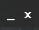 , при нажатии на которую все параметры полета станут скрыты для минимизации визуального шума. Доступны останутся только кнопка «свернуть/закрыть (окно)», «полетели!» и «play/pause».
Повторное нажатие на кнопку позволит обратно раскрыть параметры полета.
Функция автоматического наведения камеры на БПЛА становиться доступна пользователю сразу после начала полета. Появляется модальное окно с надписью «Фиксация камеры на самолет». Слева от надписи находится иконка камеры, при нажатии на которую, камера автоматически привяжется и начнет следовать за БПЛА.
Данная функция создана для удобства слежения за объектом полета. Круговой обзор будет осуществляться с помощью левой кнопки мыши, приближение и отдаление – с помощью колесика мыши.
Функция полного закрытия модального окна управления БПЛА при нажатии на "х" в правом верхнем углу модального окна. Данная функция реализована, чтобы пользователь мог сделать снимок экрана без посторонних элементов. Окно можно открыть обратно, нажав левой кнопкой мыши на БПЛА.
В левом боковом меню расположен список проектов, при нажатии на каждый из которых открывается список слоев, привязанных к конкретному проекту.
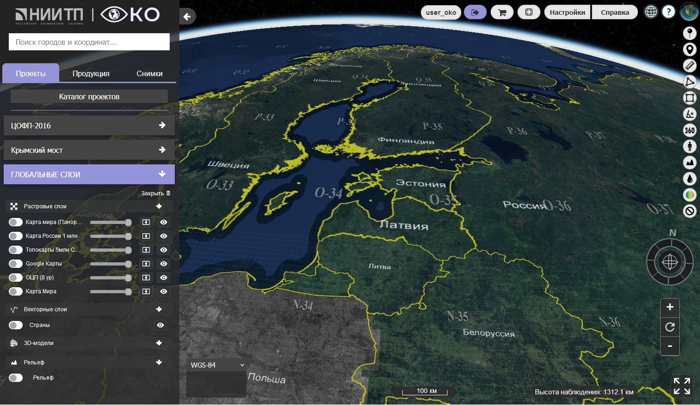Все слои разделены на 4 основные категории: растровые слои, векторные слои, 3D-модели и рельеф. Для растровых слоев доступны такие опции, как включение/выключение слоя, управлению прозрачностью конкретного слоя, включение/выключение режима шторки, а также перелет к слою.
Добавление новых слоев в существующий проект производится через меню "Проекты" и редактирование нужного проекта (см. раздел "Работа с проектами").
Для создания нового проекта необходимо перейти в меню "Проекты" и кликнуть левой кнопкой мыши по кнопке "Создать новый проект". В открывшемся меню можно указать название проекта, а также его описание.
Для начала редактирования уже существующего проекта необходимо перейти во вкладку "Проекты" и нажать кнопку "Редактирование проекта" напротив нужного названия. Далее откроется меню редактирования проекта, в котором для изменений доступны следующие данные:
- Имя проекта
- Добавить растровые данные через указание URL сервера раздающего тайлы в формате WMTS. Так же доступно отображение семантики для растровых данных полученных через веб сервис Panorama. Для удобства добавления растровых данных, серверу раздающему тайлы задаётся псевдоним, благодаря чему нет необходимости каждый раз заново писать URL.
- Добавить векторные данные через указание пути до слоя на сервере и присваивание ему нового имени. Изменить векторные данные можно при помощи клика на соответствующее название. Таким образом, можно изменить имя слоя, путь до слоя, тип, высоту и классификатор. Кроме того, можно удалить необходимые данные при помощи клика по кнопке "Удалить".
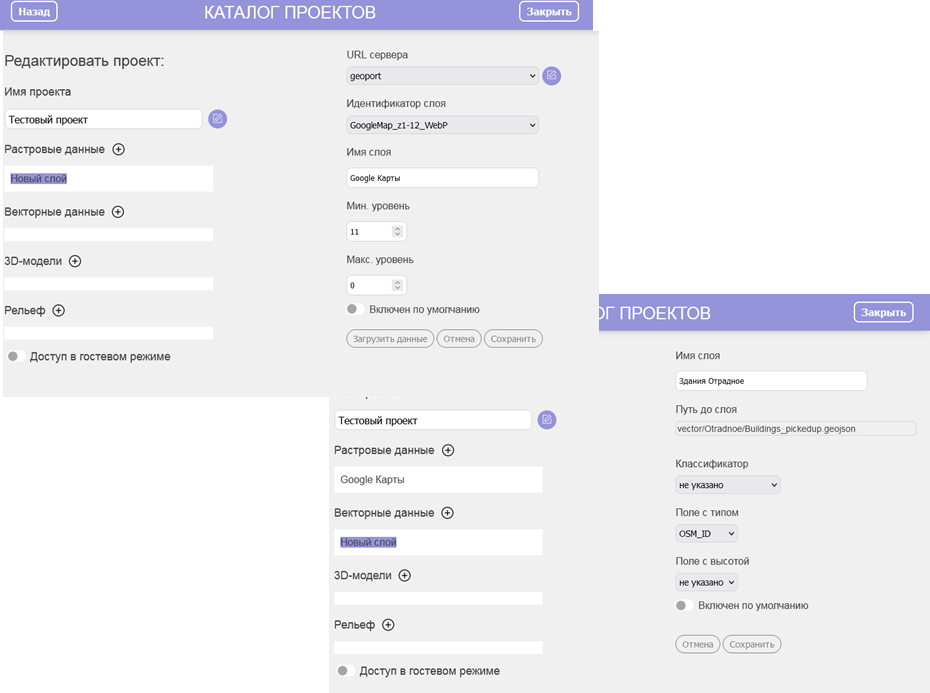- Добавить 3D-модели через указание пути до слоя на сервере и присваивание ему нового имени. Изменить путь до слоя 3D-модели и его имя можно при помощи клика на соответствующее название.
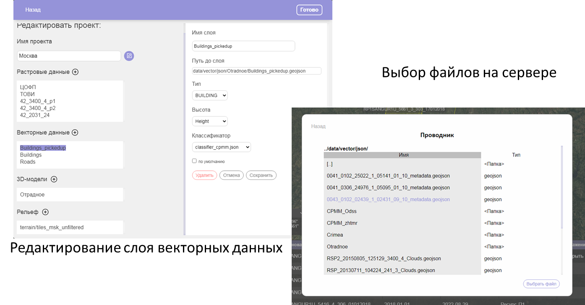- Добавить рельеф можно несколькими способами:
1. Указать путь до слоя хранящегося локально на сервере
2. Указать url внешнего сервера с описанием слоя в виде layer.json
3. Указать путь до geobirserver-a для получения рельефа из формата bir в виде hmp
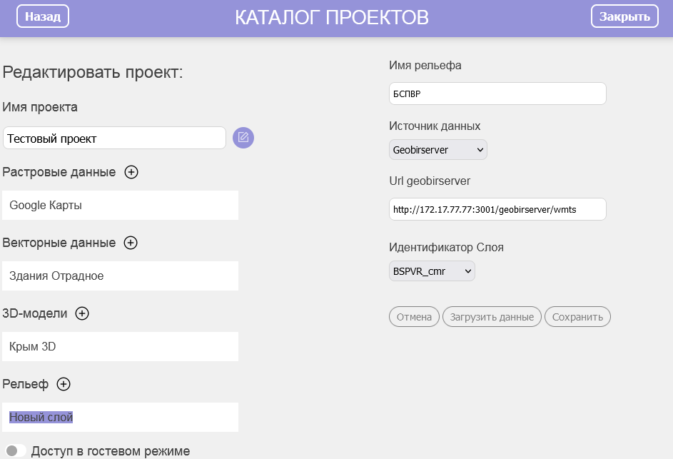Инструмент выбора базового слоя и рельефа позволяет пользователям переключаться между глобальными базовыми слоями, а также выбирать текущий глобальную модель рельефа из перечня доступных. Настройка и подключение базовых растровых слоев и моделей рельефа выполняются администратором системы с помощью инструмента администрирования.
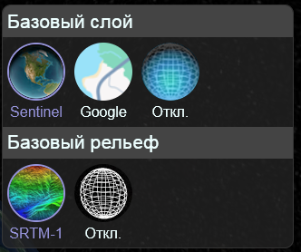Настройки карты позволяют управлять отображением и настройками видимости настроенных администратором дополнительных слоев, наносимых поверх всех остальных слоев, а так же номенклатурной и тайловой сетки. Кроме того, данное меню позволяет осуществить визуализацию пролета космического аппарата Русурс-П в момент съемки в демо-режиме.
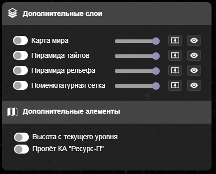В рамках комплекса также доступен поиск по базе данных адресов, как по названиям улиц и городов, так и при помощи ввода координат. Для начала поиска необходимо ввести в поисковой строке сначала название населенного пункта (например, "Винница"), затем кликнуть по нужной строке, после чего откроется дополнительная поисковая строка для ввода названия улиц.
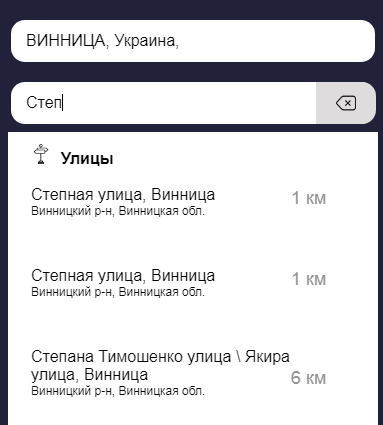После выбора города/улицы программа автоматически осуществит перелет к искомому объекту и визуализирует его геометрию.
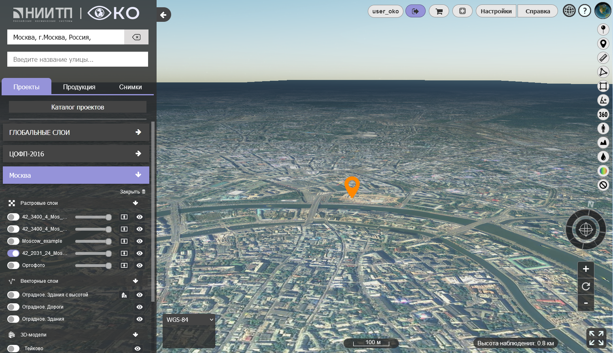Для рестарта поиска необходимо воспользоваться кнопкой "Очистить поиск", расположенной в правой части поисковой строки.
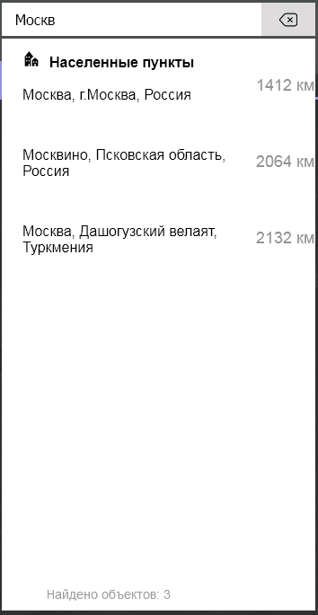Для поиска спутниковых изображений можно воспользоваться фильтрами на вкладке "Снимки" в левой навигационной панели, которые включают в себя область поиска, задание даты, выбор космического аппарата, а также диапазон углов съемки.
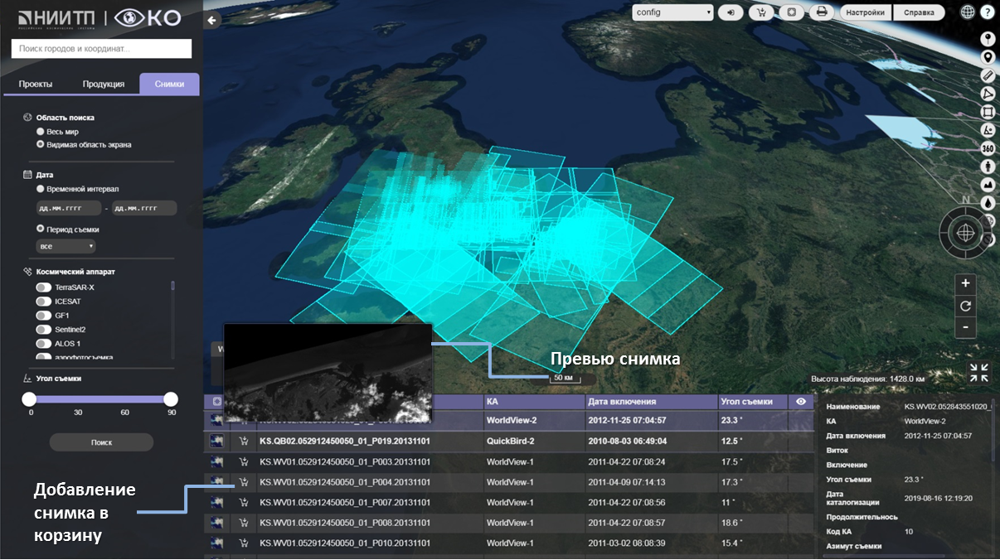По завершении настройки фильтров, необходимо нажать на кнопку "Поиск", чтобы открыть меню с каталогом подходящих снимков. При наведении курсором на содержимое крайнего левого столбца будет показано увеличенное изображение для предпросмотра. Также доступен просмотр отображения спутникового снимка с привязкой к конкретным координатам.
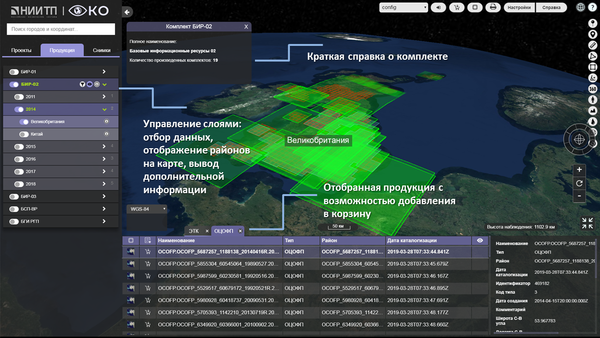Кроме того, в рамках геоинформационной платформы также возможен просмотр каталога продукции, хранящейся в архиве предприятия: отбор данных, отображение районов на карте, вывод дополнительных данных о комплекте. Отобранная продукция визуализируется в виде таблицы с несколькими вкладками. Из таблицы можно добавить необходимую продукцию в корзину для оформления заказа из архива.